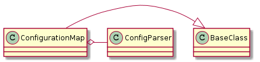

The Configuration Map maps a configuration-file-name to data. It extends ConfigObj to have more data-types.
The ConfigObj module will be used to find and convert files to data. ConfigObj has methods for the main singular data-types but I will also add collections and times.

The ConfigurationMap will raise a ConfigurationError to try and trickle up more useful information.
| ConfigurationError | An error to raise if a component or part is mis-configured. |
| ConfigurationMap(filename) | A map from configuration files to data | ||
| ConfigurationMap.get(section, option[, ...]) | Gets the option from the section as a string | ||
| ConfigurationMap.get_type(cast, section, option) | Gets a value and casts it | ||
| ConfigurationMap.get_int(section, option[, ...]) | gets the value as an integer | ||
| ConfigurationMap.get_float(section, option) | gets the value as a float | ||
| ConfigurationMap.get_boolean(section, option) | Gets a value and casts it to a boolean | ||
| ConfigurationMap.get_relativetime(section, ...) | Gets a relativetime object based on the option (assumes value is timestamp) (see timemap.RelativeTime) | ||
| ConfigurationMap.get_datetime(section, option) | Gets a datetime object based on the option (value is timestamp) (see timemap.AbsoluteTime) | ||
| ConfigurationMap.get_list(section, option[, ...]) | Gets the value and converts it to a list | ||
| ConfigurationMap.get_dictionary(section, option) | converts a delimiter-separated line to a key:value based dictionary (values are strings) | ||
| ConfigurationMap.get_ordered_dictionary(...) | converts a delimiter-separated line to a key:value based dictionary (values are strings) | ||
| ConfigurationMap.get_named_tuple(section, option) | Converts a line to a named tuple (Like the get_dictionary but keys are properties) | ||
| ConfigurationMap.sections |
|
||
| ConfigurationMap.has_option(section, option) |
|
||
| ConfigurationMap.options(section[, ...]) | gets a list of option-names | ||
| ConfigurationMap.items(section[, optional, ...]) | Gets tuples of (option, value) pairs for section | ||
| ConfigurationMap.defaults | the [DEFAULT] section | ||
| ConfigurationMap.write(path) | Writes the current configuration to the path (filename) |
Note
get_relativetime and get_absolutetime are currently using the defaults. If more control is needed, you will need to grab the option and build them yourself.
This property is a SafeConfigParser instance. When it is created, the ConfigurationMap reads the filename passed in on instantiation and checks if the loaded configuration has a [DEFAULT] : config_glob option. If it does, it gets the config_glob value, traverses the expanded glob and loads all the files that match.
These are the ConfigParser methods that will be used.
| SafeConfigParser([defaults, dict_type, ...]) | |
| SafeConfigParser.options(section) | Return a list of option names for the given section name. |
| SafeConfigParser.sections() | Return a list of section names, excluding [DEFAULT] |
| SafeConfigParser.items(section[, raw, vars]) | Return a list of tuples with (name, value) for each option in the section. |
| SafeConfigParser.read(filenames) | Read and parse a filename or a list of filenames. |
| SafeConfigParser.write(fp) | Write an .ini-format representation of the configuration state. |
| SafeConfigParser.get(section, option[, raw, ...]) | Get an option value for a given section. |
| SafeConfigParser.getint(section, option) | |
| SafeConfigParser.getfloat(section, option) | |
| SafeConfigParser.getboolean(section, option) | |
| SafeConfigParser.has_option(section, option) | Check for the existence of a given option in a given section. |
| SafeConfigParser.has_section(section) | Indicate whether the named section is present in the configuration. |
These are the ConfigParser Exceptions that I will handle in the ConfigurationMap.
| ConfigParser.Error([msg]) | Base class for ConfigParser exceptions. |
| ConfigParser.NoSectionError(section) | Raised when no section matches a requested option. |
| ConfigParser.NoOptionError(option, section) | A requested option was not found. |
[Errno 2] No such file or directory Is pylint installed? .. image:: classes_configurationmap.png